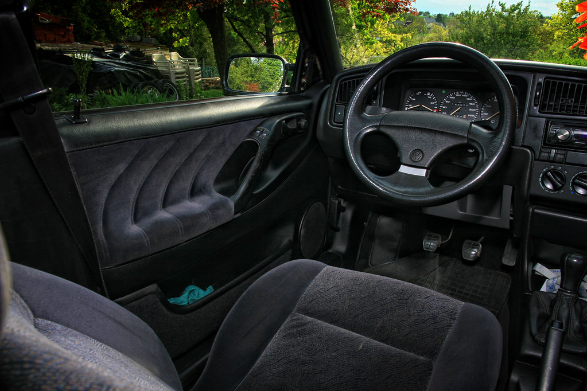
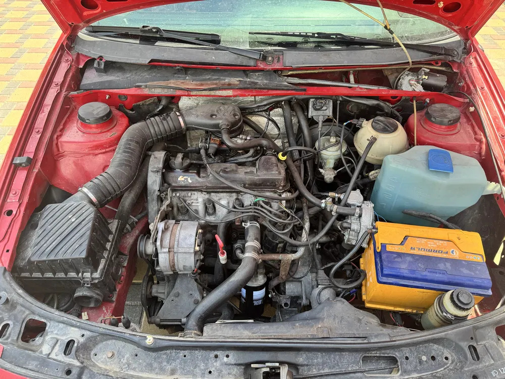
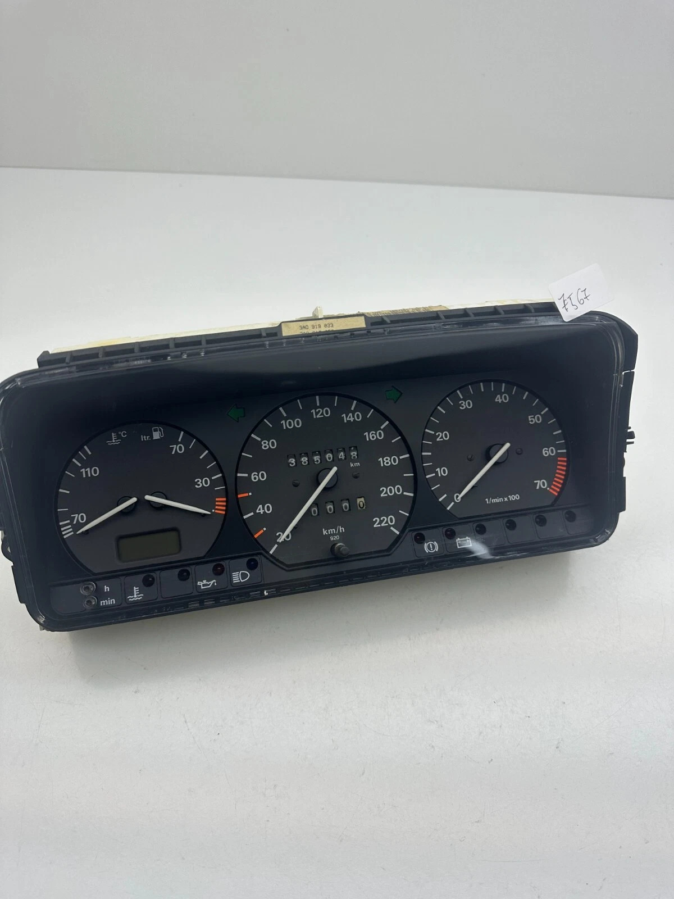

Встановлення салону від B4 у B3

Процес переходу на OEM+ деталі триває. Встановлення сидінь від наступного покоління значно покращує комфорт та загальний вигляд інтер'єру.

Процес переходу на OEM+ деталі триває. Встановлення сидінь від наступного покоління значно покращує комфорт та загальний вигляд інтер'єру.

Важливо пам'ятати, що на цій модифікації двигуна 1.6 встановлено саме гідравлічне зчеплення, а не тросикове. Це вимагає іншого підходу до обслуговування та прокачування системи.

Перехід від базової приладової панелі з великим стрілочним годинником до версії з тахометром — це один із найпопулярніших та найкорисніших апгрейдів для Volkswagen Passat B3.